Samuele Stronati
University of Camerino | Autonomous & Collaborative Robotics Course
Advisor: Prof. Alessandro Marcelletti · Academic Year 2025/2026
3 days.
After an earthquake, a survivor's odds collapse
once the golden period closes.
The Problem
Searching against the clock
Central Italy, 2016: rubble fields no single team could sweep in time.
Survival probability falls steeply through the first three days — coverage speed is the whole game.
A human ground search is slow, dangerous, and does not scale.
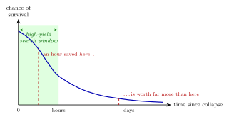
One searcher is not enough — but a brain is a bottleneck
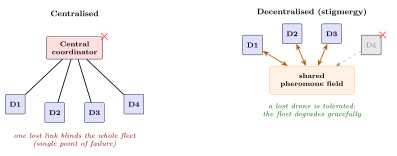
Central planner: single point of failure and a comms bottleneck.
Decentralised swarm: degrades gracefully — lose a drone, keep searching.
Two contributions
What this work delivers
1 — A decentralised-steering system
A simulated multi-drone swarm whose drones steer themselves
through stigmergy — indirect signalling via a shared environment —
under a thin coordinator for coverage and task allocation.
2 — A reproducible harness
A seeded, scriptable evaluation pipeline that turns
"which strategy is better?" into a statistical question with
confidence intervals and significance tests.
Built on ROS 2 and DDS, the middleware studied in the course.
How the swarm searches
Steering: a stigmergic motor schema
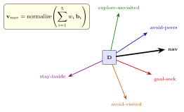
Each drone sums five basis behaviours into one velocity vector — no drone is told where to go.
avoid pheromone others laid (spread out)
follow the assigned coverage pattern
avoid obstacles and peers
an anti-stall scatter phase
Stigmergy, live: coverage with no planner
A four-drone fleet sweeps a search disk under the real
motor-schema law. Each lays a fading pheromone
stamp under its sensor footprint; the field decays every tick.
Drones are repelled by bright (visited) cells, pulled to dark
ones, and held inside the disk — so the area fills with no planner, and
victims are found as it does.
Area surveyed0%
Victims found 0 / 3t = 0.0 s
Scatter into sectors, then stigmergy
takes over — the only coordination channel is the shared field.
Coverage: seven sweep patterns, one factory
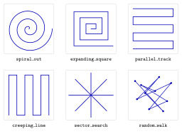
The deliberative layer turns a chosen pattern into scan waypoints; the reactive layer flies them while staying spread out.
Seeing: detection that earns its confidence
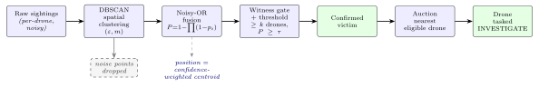
Raw sightings are noisy — a candidate is reported only after three guards in series:
① DBSCAN
clusters nearby detections; sparse noise points are dropped.
② Noisy-OR fusion
each independent witness raises the cluster's confidence.
③ Multi-witness gate
≥ k drones & P ≥ τ — blocks single-drone false alarms.
Dividing the work: a greedy auction
When a victim is confirmed, every eligible drone bids:
u =
π · κdmax(dist, 1)
Homogeneous fleet → κd = 1, so
highest bid = nearest eligible drone. A seeded, name-sorted
tie-break makes ties reproducible.
How it is built
Three tiers: deliberate, sequence, react
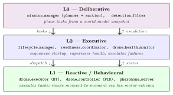
Slow global planning on top, fast reflexes at the bottom — the 3T architecture, each layer at its own clock rate.
Ports and adapters: the domain knows no ROS
A deliberately chosen stack
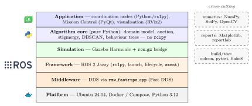
Every layer picked against alternatives — ROS 2 over ROS 1, data-centric DDS over a broker, a Python/C++ split across the GIL boundary.
The hybrid shape — two components, plus the hard part
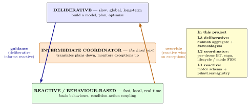
Hybrid control's defining structure: deliberation up top, reaction at the bottom, and an intermediate coordinator reconciling them. The flow is asymmetric — deliberation informs; reaction overrides on surprise.
Hybrid, not a pure swarm — a defended trade-off
The reactive core is behaviour-based; coverage and allocation are deliberative. Why not a pure swarm?
A pure swarm wins on
faithfulness to full decentralisation
robustness to disaster dynamics
But the hybrid keeps
a coverage guarantee (IAMSAR doctrine: "this region was searched")
reproducibility — the whole second contribution
Honest scope: steering is fully decentralised; one thin coordinator runs coverage + the auction. Pushing it peer-to-peer is future work, not a present claim.
And the seam is real — pluggable behaviour-based control
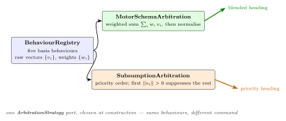
The reactive core opens at two strategy seams:
each basis behaviour is a first-class object in a registry — adding one = a class + register()
the combination rule is a swappable ArbitrationStrategy — subsumption ships beside motor-schema
So "plug in behaviour-based control" is structural, not rhetorical: a new controller enters by injection, with zero edits to the deliberative or executive layers.
The MotorSchemaArbitration default is bit-identical; SubsumptionArbitration ships beside it.
Where this sits in the design space
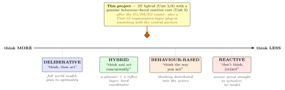
A 3T hybrid (Unit 5/8) with a genuine behaviour-based reactive core (Unit 9). By Unit-10's framing it was option A — a central planner over behaviours — until the next slide's seams.
MRS card (Unit 11):
Size: multiple (4)
Morphology: homogeneous
Adaptation: dynamic
Coordination: central auction + decentralised steering
Awareness: cooperative
Automation: Level 4
Built toward Unit-10 — three new seams
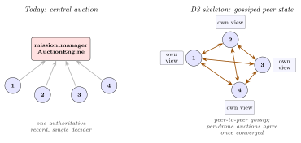
Three plug-ins coexist with the central auction inside the seeded harness:
D1 AffectMonitor — the model-free "emotion-as-stuck" detector, unified behind one L2–L3 port.
D2 distributed motivations + intention workspace — per-drone desires reconciled into intentions that configure behaviours; MotivationWorkspaceStrategy sits beside greedy_auction.
D3 decentralisation skeleton — the gossiped peer-state above retires the central coordinator; live cutover is the reproducibility ↔ robustness trade, deferred.
Does it work?
Turning a demo into evidence
One independent variable: the coverage pattern.
Baseline to beat: random_walk.
Every run seeded — same seed, same trajectory.
Each cell repeated; results with bootstrap CIs.
The statistics
Jain fairness index
Kaplan–Meier survival
Welch's t-test
Efron bootstrap intervals
Result: structure beats randomness
Bars are mean ± bootstrap 95% CI. The
spiral leads;
the random walk baseline
sits clear below. Hover a bar for the Welch test vs. random walk.
Illustrative of the
harness output (thesis §9) — the form of the comparison, regenerable
from a seeded sweep, not archived measurements.
Result: survivors found sooner
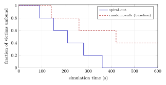
Kaplan–Meier detection-time curves: the better the pattern, the faster the fall to "all found".
One mission, fully measured
Most runs scored zero true
positives — two bugs in series: an un-rotated yaw projection threw detections off,
and scoring read the fusion flag instead of the saga's own confirmations. Fixing both
produced the first measured true positive.
Default /
spiral_out / greedy_auction,
five victims, 600 s timeout.
Time to first detection
20.5 s
Time to first confirmation
56.3 s
Final coverage
31.1%
True positive
1 — victim 3 @ 0.14 m
Precision / recall / F₁
0.14 / 0.20 / 0.17
Load fairness (Jain)
1.00
Real-time factor
0.37 (605 samples)
Measured,
read verbatim from one archived run. Recall is bounded by the 31% coverage the timeout
permitted; precision by six near-pad false positives — both surfaced, not buried.
Reflection
Built in stages, January to May
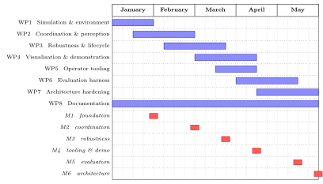
Honest boundaries, and where it goes next
Limitations
Reproducibility is statistical, not bit-exact (DDS ordering).
Perception is simulated, not real computer vision.
Single-host; the Hungarian allocator is under-exercised.
Future work
Sim-to-real: a real CV adapter behind the same port.
A full seeded sweep across all scenarios.
Predictive reassignment; a coverage-guarantee hybrid.
The contribution is a method held to a standard
a decentralised searcher, and a way to prove when one search beats another.
Thank you.
Questions?
Backup: the data flow
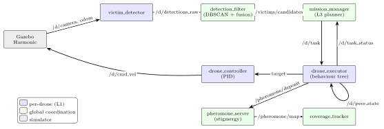
Backup: reproducibility by construction
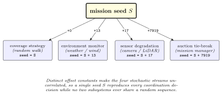
One root seed fans out into independent streams — environment +13,
sensors +17, auction +7919 — so every subsystem is reproducible yet uncorrelated.